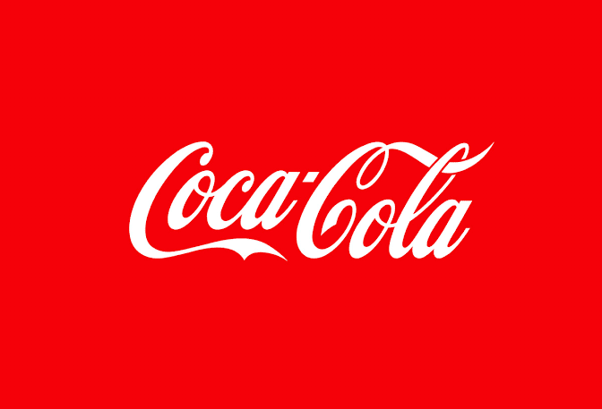
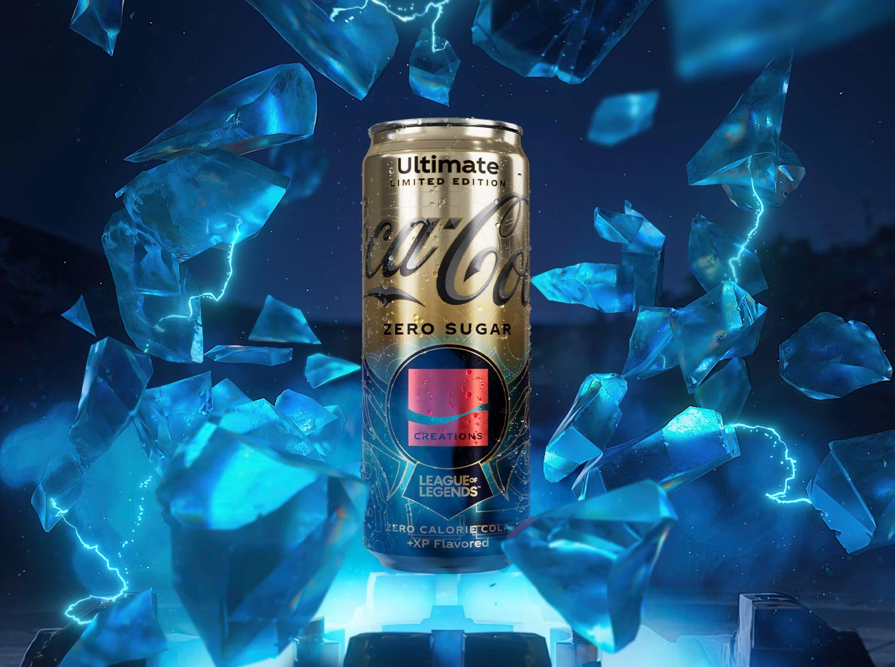
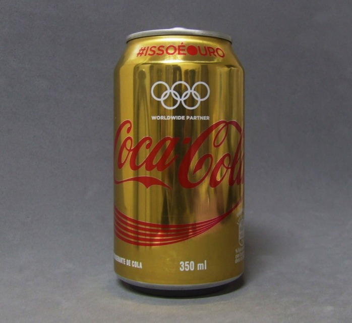
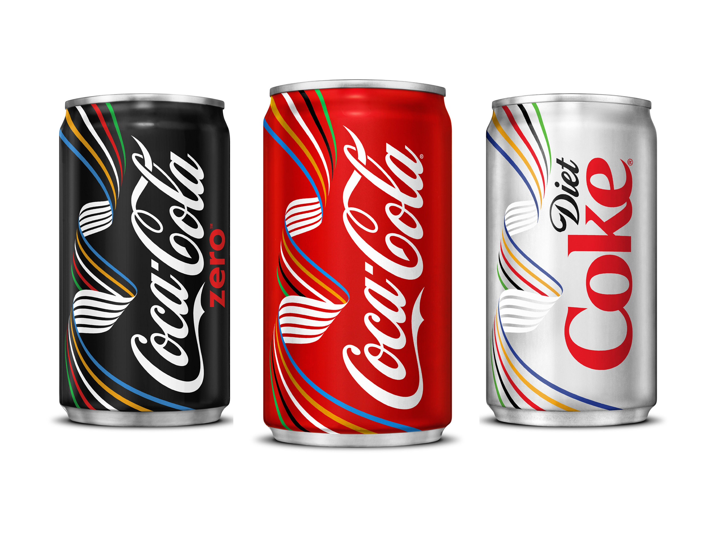
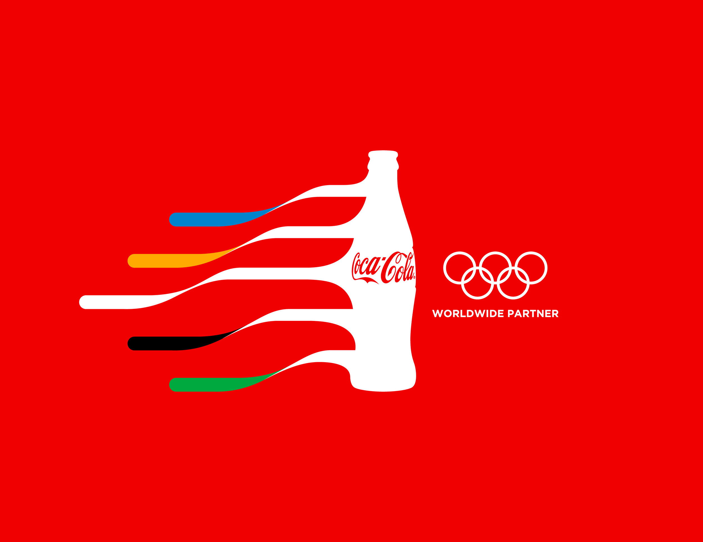

Produtos á venda
Sobre nós
A Coca-Cola Company foi fundada em 1892 em Atlanta, Georgia, Estados Unidos, por Asa Griggs Candler, que comprou os direitos da fórmula do farmacêutico John Pemberton. Desde então, a empresa cresceu para se tornar uma das marcas mais reconhecidas e valiosas do mundo.
-

Eventos
-




Eventos
James Quincey
CEO
James Quincey é o CEO da Coca-Cola, liderando a gigante multinacional de bebidas com visão estratégica e inovação. Desde que assumiu o cargo, Quincey tem impulsionado a diversificação do portfólio de produtos da empresa, expandindo além dos refrigerantes tradicionais. Ele é conhecido por sua abordagem progressista em sustentabilidade, focando em práticas ecológicas e redução de resíduos plásticos. Sob sua liderança, a Coca-Cola tem intensificado esforços para se adaptar às mudanças nas preferências dos consumidores, incluindo o desenvolvimento de bebidas saudáveis e de baixa caloria. Quincey's direção tem sido crucial para a evolução e modernização da marca, mantendo-a competitiva no mercado global.
Mauro Barros
Gerente financeiro
Mauro Barros é o gerente financeiro da Coca-Cola, desempenhando um papel crucial na supervisão das operações financeiras da empresa. Com vasta experiência na área, ele é responsável por gerir orçamentos, analisar despesas e garantir a saúde financeira da organização. Barros é conhecido por sua habilidade em implementar estratégias eficazes de controle de custos e maximização de lucros. Sua liderança tem sido fundamental para a estabilidade financeira e o crescimento contínuo da Coca-Cola. Além disso, ele trabalha em estreita colaboração com outras equipes para alinhar as metas financeiras com os objetivos corporativos.
Luiz Fogaça
Gerente de Estoque
Luiz Fogaça é o gerente de estoque da Coca-Cola, desempenhando um papel crucial na gestão e otimização dos processos de armazenamento e distribuição da empresa. Com uma abordagem meticulosa e eficiente, Fogaça garante que os níveis de estoque sejam adequados para atender à demanda, evitando tanto excessos quanto escassez. Ele implementa práticas avançadas de controle de inventário, utilizando tecnologias modernas para rastreamento e gerenciamento em tempo real. Além disso, Fogaça é reconhecido por seu compromisso com a redução de custos operacionais e melhoria contínua dos processos logísticos. Sua liderança assegura que a cadeia de suprimentos da Coca-Cola funcione de maneira fluida e eficiente, contribuindo significativamente para o sucesso operacional da empresa.
Ricardo Oliva
Entregador
Ricardo é entregador na Coca-Cola, desempenhando um papel vital na cadeia de distribuição da empresa. Com um compromisso inabalável com a pontualidade e a eficiência, Ricardo garante que os produtos cheguem aos clientes de maneira rápida e segura. Ele é conhecido por seu excelente atendimento ao cliente, sempre disposto a resolver problemas e atender às necessidades dos clientes com um sorriso. Ricardo mantém um alto padrão de cuidado no manuseio dos produtos, assegurando que cada entrega esteja em perfeitas condições. Sua dedicação e profissionalismo fazem dele um membro valioso da equipe da Coca-Cola, contribuindo para a satisfação do cliente e a reputação da empresa.

Willian Silva
Programador
Willian Silva é um programador altamente competente, conhecido por suas habilidades excepcionais em desenvolvimento de software. Com uma sólida formação em ciência da computação, ele domina diversas linguagens de programação, incluindo JavaScript, Python e Java. Willian tem uma paixão por resolver problemas complexos e criar soluções inovadoras, sempre buscando otimizar a eficiência e a funcionalidade dos sistemas em que trabalha. Ele é reconhecido por sua capacidade de trabalhar tanto de forma independente quanto em equipe, colaborando eficazmente com colegas de diferentes áreas. Sua dedicação à qualidade e à melhoria contínua faz dele um profissional respeitado no campo da tecnologia.